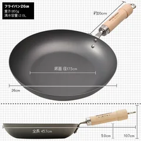
リバーライト
極JAPAN 鉄フライパン 26cm
¥6,05026cm・窒化処理・IH対応・日本製
紹介した回：買い替えずに10年使えている一生モノ11品
在庫・送料はリンク先で
Amazonで見る ↗楽天で見る ↗キッチン・料理

リバーライト
¥6,05026cm・窒化処理・IH対応・日本製
紹介した回：買い替えずに10年使えている一生モノ11品
在庫・送料はリンク先で
Amazonで見る ↗楽天で見る ↗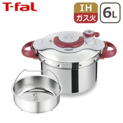
ティファール
¥20,9886L・4〜6人用・IH／ガス火対応・パッキン交換可
紹介した回：買い替えずに10年使えている一生モノ11品
在庫・送料はリンク先で
Amazonで見る ↗楽天で見る ↗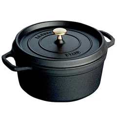
ストウブ
¥25,99920cm・鋳物ホーロー・フランス製
紹介した回：買い替えずに10年使えている一生モノ11品
在庫・送料はリンク先で
Amazonで見る ↗楽天で見る ↗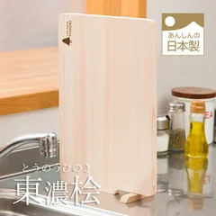
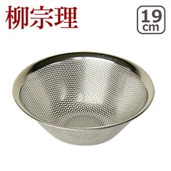
柳宗理
¥1,87019cm・ステンレス・穴あきタイプ
紹介した回：買い替えずに10年使えている一生モノ11品
在庫・送料はリンク先で
Amazonで見る ↗楽天で見る ↗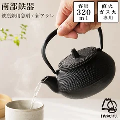
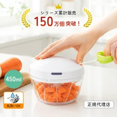
K&A
¥1,060手動・容量450mL・電源不要・ふたも本体も丸洗い
紹介した回：買ったのに使わなくなった物8つと、そのあとに選んだ6品
在庫・送料はリンク先で
Amazonで見る ↗楽天で見る ↗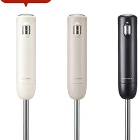
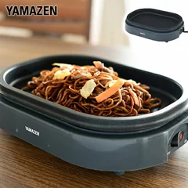
山善
¥2,980焼く面21×29.5cm・高さ8cm・入／切のみ
紹介した回：買ったのに使わなくなった物8つと、そのあとに選んだ6品
在庫・送料はリンク先で
Amazonで見る ↗楽天で見る ↗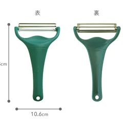
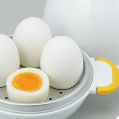
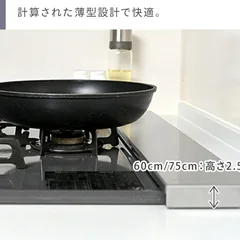
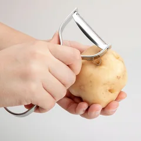
EDITS
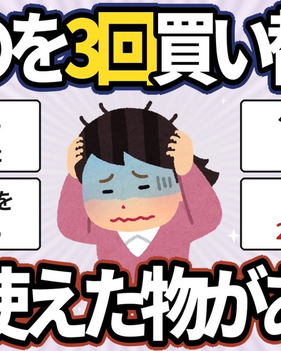
暮らしの道具 / 2026.09.20
11品を紹介
紹介したものを見る →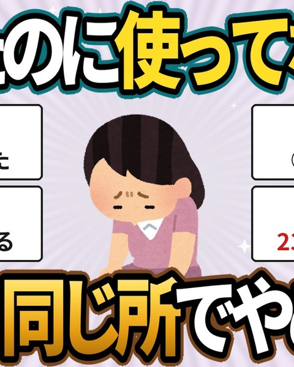
収納・片付け / 2026.09.20
6品を紹介
紹介したものを見る →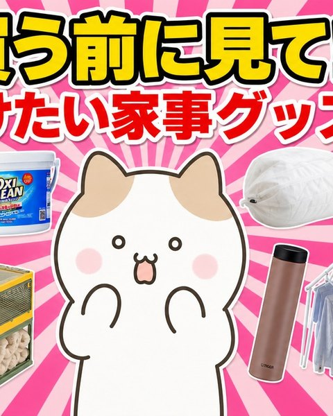
家事・掃除・洗濯 / 2026.09.16
15品を紹介
紹介したものを見る →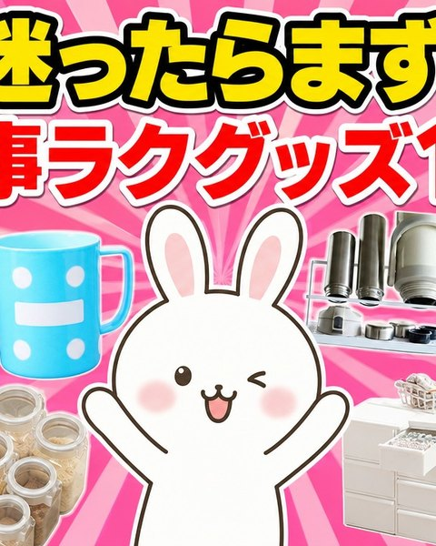
家事・掃除・洗濯 / 2026.09.15
18品を紹介
紹介したものを見る →